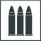
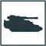

Mustering an Army
In Legions Imperialis, players take command of epic armies consisting of a wide array of Detachments ranging from massed ranks of infantry supported by armoured tank columns to battlegroups of Titans drawn from the Collegia Titanica.
When playing a game of Legions Imperialis, each player controls an Army. Each Army is made up of a number of Formations, each of which is a group of Detachments that works together on the battlefield. This system of Formations and their component Detachments allow a player to select a flexible force, capable of countering the strategies of their opponent and taking on a variety of Missions and battlefield challenges.
The process of selecting an Army differs depending on the type of game being played. An Open Play game (see page 100) does not impose any restrictions on which models may be included in an Army, and players are free to select whichever models they choose before beginning the battle. In Matched Play and Narrative Play (see page 100), players must use a specific method of selecting armies for play, with a number of restrictions imposed upon which models may be selected in order to ensure a balanced game that reflects the armies of the Horus Heresy.
When playing a Matched or Narrative Play game, both players use a points limit to determine the size of the game that is to be played. The 'standard' points limit for games of Legions Imperialis is 3,000 points - this is a guideline, however, and players can agree upon whatever points limit they wish.
Mustering an Army
Once a points limit for a game has been agreed upon, players can begin mustering their armies. To do so, both players follow the Army Selection Steps detailed below, completing each in turn.
Army Selection Steps
-
Declare Allegiance
-
Choose Primary Army List
-
Assemble Compulsory Formations
-
Complete the Army
The sum total of points values of all Detachments in an Army can never be greater than the agreed upon points limit. A player can have fewer total points than the points limit, however there is no benefit for doing so, thus players are encouraged to get as close to the limit as they can.
Declare Allegiance
The first step to assembling an Army is for the player to declare its Allegiance. Players can declare its Allegiance as either Loyalist or Traitor.
An Army that has the Loyalist Allegiance may not include any Formations or Detachments that contain models with the Traitor special rule and an Army with the Traitor special rule may not include any Formations or Detachments that contain models with the Loyalist special rule. In all cases a Formation or Detachment will indicate if it has a set Allegiance - any Formation or Detachment that does not list a specific Allegiance may be included in any Army, regardless of Allegiance.
Future supplements may explore additional Allegiances - such supplements will detail in full any rules for such Allegiances.
Choose Primary Army List
Once a player has declared the Army's Allegiance, they must choose an Army List from which to select the majority of their force. This is referred to as the Army's Primary Army List and represents the main faction upon which a player's Army is based, such as the Legiones Astartes or Solar Auxilia. The Army is referred to as a [Army List name] Army (e.g., Legiones Astartes Army).
This rulebook includes basic Army Lists for the Legiones Astartes and Solar Auxilia - future supplements will expand upon these lists as well as introduce new ones.
A player must spend at least 70% of the points available from the agreed Points Limit on Formations and Detachments from their Primary Army List.
Most Army Lists have a number of special rules that apply to all Formations and Detachments selected from that Army List. Unless instructed otherwise, these rules do not apply to any Allied Contingents (see page 129) which are selected from another Army List, such formations instead use any special rules that are a part of the Army List from which they were selected.
Assemble Compulsory Formations
Once an Allegiance has been declared and a Primary Army List chosen, players can begin to select the models that will compose their armies. These armies are formed of two distinct components: Formations and Detachments.
Formations are the primary tool by which armies are assembled and organised. Formations are strategic groupings of Detachments that determine the composition of an Army and affect Detachment Morale (see the Morale and Break Point rules on page 64). In general, larger Formations have a higher Break Point and are more advantageous on the battlefield.
Formations represent the main building blocks of an Army; each Army must include a minimum of 1 Formation from its Primary Army List for each full 1,500 points of the agreed points limit for each Army (i.e., an Army assembled to a 3,000 points limit must include at least 2 Formations, a 4,500 point Army must include at least 3 Formations etc,.).
Each Army List includes a number of Formations that are available to a player; future supplements may add additional Formations for various Army Lists.
Formation Organisation Charts
Each Formation is represented by a Formation Organisation chart - which Detachments a Formation can, or must, include are detailed there. Each Formation Organisation chart has a number of slots, split between Compulsory slots and Optional slots.
Compulsory slots are slots that must be filled with the appropriate Detachment for that Formation to be fielded. Optional slots are slots the player can fill with the appropriate Detachments but they do not have to.
Each slot represents either a specific Detachment, such as a Legion Tactical Detachment, or a Detachment Role, such as 'Core Detachments'. Where a specific Detachment is listed, the slot must be filled with that Detachment. In the case of a Detachment Role, any Detachment from that Role can fill the slot; each datasheet has an icon which represents the relevant Detachment's Role, which informs which Detachments can be taken in which slots (see page 128 for more details on Detachment Roles). A Formation's slots can only be filled by Detachments drawn from the same Army List as the Formation unless instructed otherwise.
Some slots may offer choices, such as 'Choose one Detachment from the following:', listing either multiple specific Detachments or Detachment Roles. Where this is the case, the slot may be filled with any Detachment from the list or from the listed Detachment Roles. Additionally, some Formation Organisation charts might allow multiple slots to be filled with a choice of Detachments or Detachment Roles, such as 'Choose a maximum of three Detachments from the following:'. Where this is the case, the slots may be filled with any combination of the listed Detachments or Detachment Roles, up to the maximum allowed.
Formations & Detachments
Detachments are tactical groupings of models, forming the primary fighting units on the battlefield. All models in a Detachment must maintain Coherency and are activated at the same time, moving and attacking as a distinct group.
All Armies will include a number of Detachment Roles, shown in the list that follows. A Detachment's Role will be denoted by the appropriate symbol in the Detachment's entry. Each Role represents a distinct type of asset available to an Army. Future supplements will add new Detachments to expand each Role, allowing you to field a variety of Detachments in various Roles.
HQ Detachments: These are the leaders and generals of any army. Often few in number and with limited strategic weaponry, they rely on keen tactical acumen and special abilities to affect the flow of battle.
Core Detachments: These warriors are the mainstay forces of an army, most often the foot soldiers that must weather the harshest fighting on the battlefield. Holding key objectives in the face of the enemy is the task that falls most often to these units.
 Support Detachments: Composed of specialised units intended to support the core of an army, Support Detachments take a variety of forms. Regardless of composition, they serve to eliminate key threats in the ranks of the enemy army.
Bastion Detachments: Bastion Detachments include static weapon platforms, gun emplacements and units typically utilised in garrison forces. Designed to lock down portions of a battlefield with heavy firepower, they are often difficult to deploy in a timely manner.
Vanguard Detachments: Vanguard Detachments represent the forward elements of an army, who strike fast and without mercy. Some are trained to range ahead of a marching army and secure key positions, while others form the tip of the spear, plunging directly into the enemy line to open the way for those that follow.
Light Armour Detachments: Designed as support elements for ground forces, Light Armour is often fast and manoeuvrable. Their role is often to counter unexpected threats and provide heavy firepower in timely fashion
Battle Tank Detachments: The mainstay armoured elements of a force. Extensively field tested, Battle Tanks are capable of responding to a myriad of threats and plunging into the thickest of fighting.
 Heavy Armour Detachments: The hammer that breaks open the toughest of foes, Heavy Armour represents many of the largest war machines within an army. Though often slow, they more than make up for it with weapons that can shatter battlelines in a single volley.
Artillery Detachments: Covering both stationary and mobile long-ranged weaponry, Artillery Detachments are designed to soften up the enemy from a distance, relentlessly bombarding the enemy position in preparation of the main assault.
Air Support Detachments: Air elements, both those stationed at local airfields and those on orbital ships, provide rapid close support to armies. Their role is to clear the skies of enemy aircraft and unleash destruction upon enemy ground troops.
Transport Detachments: These special Detachments are composed of transport vehicles, and are attached to other Detachments to provide fast moving transport for slower infantry units. Unless instructed otherwise, Transport Detachments have a maximum Detachment size of 8 unless chosen as Dedicated Transports.
Knight Detachments: Most commonly represented by the Knight armours of the Questoris Familia, Knight Detachments are technological marvels that can turn the tide of a battle.
Titan Detachments: The god-engines of the Mechanicum frequently took to the field alongside the armies of both the Emperor and the Warmaster; as the war progressed, darker aberrations similar in power were also seen. Capable of sundering whole armies on their own, Titan Detachments represent the most powerful forces that can be mustered.
Dedicated Transport Detachments
Formation Organisation charts may include Transport sections, which will list any Transport options available for Detachments within the Formation. Transports purchased for a Detachment are referred to as Dedicated Transports. All Dedicated Transports purchased for a Detachment form a single Detachment but do not take up a Detachment slot within a Formation and so are not counted against the minimum or maximum number of Detachments within one.
If a Detachment with Dedicated Transports is joined by another Detachment (such as one with the [Command] special rule) that has its own Dedicated Transport, the latter Dedicated Transport joins the Dedicated Transport Detachment - this can result in Detachments with different models (e.g., three Legion Rhinos and one Spartan Assault Vehicle). Detachments that have a Dedicated Transport with the Flyer special rule cannot join Dedicated Transports without the Flyer special rule.
A Detachment must purchase the minimum number of Dedicated Transports needed to carry all models within the Detachment; it cannot purchase fewer, nor can it purchase more than necessary.
For example, a Legion Tactical Detachment with a Detachment Size of 10 is upgraded with Legion Rhinos as Dedicated Transports. As a Rhino is Transport (2), meaning each Rhino can carry two models, the Legion Tactical Detachment must purchase 5 Rhinos; no more, no less.
A Detachment can only purchase a Dedicated Transport if it is eligible to Embark upon that Transport.
For example, if a Formation allows Legion Rhinos to be purchased as Dedicated Transports for Infantry Detachments in a Formation, a Legion Terminator Detachment cannot purchase a Rhino as, due to the Bulky special rule, it cannot Embark upon a Rhino.
Dedicated Transports can only carry models from the Detachment they were purchased as an upgrade for. Dedicated Transports are ignored for the purposes of calculating Break Point.
For example, a Formation with 26 models from HQ, Core or Support Detachments plus 10 models from Transport Detachments would have a Break Point of 13, not 18.
Models with the Transport (X) special rule (or variation of) that fill a Transport Detachment slot are not Dedicated Transports; they function as a normal Detachment, and count towards the Break Point of the Formation. Any eligible Detachment with the Formation can Embark upon these Transports; models from outside the Formation or within an Allied Contingent cannot.
Complete the Army
An Army must include the minimum number of Formations drawn from the Primary Army List, after which additional Formations can be added; the total points value of the Army cannot be greater than the agreed upon points limit. In addition, once all Compulsory Formations have been added, Allied Contingents may be included in the Army.
Allied Contingents
Allied Contingents represent forces from the Army List available to other armies, such as battlegroups of Legiones Astartes warriors lending their strength to a Solar Auxilia force.
For each Formation drawn from the Primary Army List, an Army can include a single Allied Contingent by choosing a Formation from a different Army List or the Strategic Assets list on page 198. This Formation is assembled in the normal way using Detachments from that Army List or the Strategic Assets list - Detachments from the Primary Army List cannot fill slots in an Allied Contingent.
Each Allied Contingent in an Army can be drawn from a different list if the player wishes. The total points cost of all Detachments within Allied Contingents in an Army cannot be greater than 30% of the points limit of the Army. An Allied Contingent functions like any other Formation on the battlefield.
For example, Owen is building a Legiones Astartes Army with a 3,000 points limit. As such, he must include a minimum of two Formations drawn from his Primary Army List - he chooses a Legion Demi-Company and a Legion Garrison Force.
With the minimum Compulsory Formations filled, Owen can now include additional Formations drawn from the Legiones Astartes or Allied Contingents. Having assembled two Formations from his Primary Army List, Owen can include a maximum of two Allied Contingents. As such, he assembles an Auxilia Sub-Cohort Formation from the Solar Auxilia Army List and a Legio Support from the Strategic Asset Army List. If Owen has points remaining, he cannot include additional Allied Contingents until he adds another Formation from the Legiones Astartes Army List.